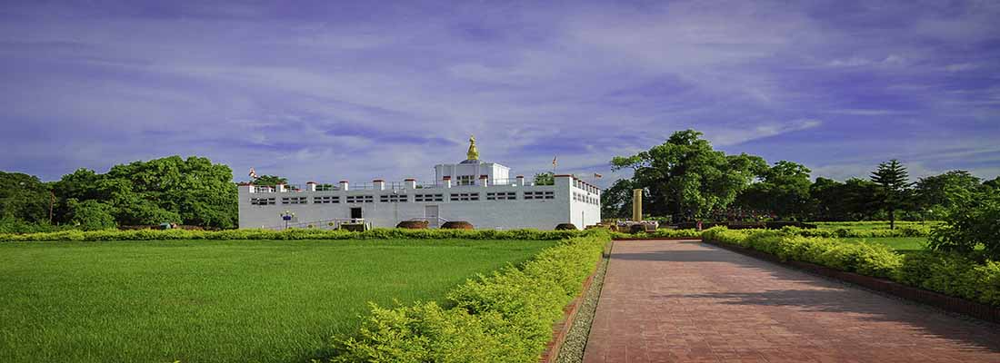

LUMBINI BIRTH PALCE OF BUDDHA
umbini is the Buddha's birthplace, one of the world's most important spiritual sites and attracts Buddhist pilgrims from around the world. Today you can visit over twenty-five Buddhist monasteries built by diverse countries from Vietnam to France, study Buddhism, meditate and visit the birthplace within the sacred Mayadevi Gardens.Lumbini in Nepal Mayadevi Temple is the most sacred site in the Lumbini Garden where archaeologists have identified the exact spot where Lord Buddha was born. Inscriptions on the Ashoka Pillar nearby also refer to the spot as his birthplace. It is said that the newly born Prince Siddhartha (later became the Buddha) took his first seven steps and delivered his peace message to humanity here. The birth took place in the beautiful Sal grove, which is now the focal point of the Lumbini Garden. Mayadevi, the Queen of Shakya King Suddhodhana of Kapilvastu, while passing through the Lumbini Garden, on the day of Baishakha Purnima (full moon day of May in 623 BC) took a bath in the the Sacred Pond Pushkarini and soon after gave birth to Prince Siddhartha. Visit the remarkably beautiful monasteries built by countries such as China, Japan, Sri Lanka, Myanmar, Germany, France and many more; admire the spectacular and diverse architecture they showcase. Soak up the peaceful atmosphere and above all, visit the Mayadevi Temple which dates back 2,200 years. Walk around the garden or find a quiet spot to contemplate. The focal point for pilgrims is a sandstone carving depicting the birth of the Buddha, believed to have been left here by the Malla King Ripu Malla, in the 14th century, when Mayadevi was worshipped as an incarnation of a Hindu mother goddess. The Ashoka Pillar was built by the great Indian Emperor Ashoka who became a devout Buddhist while visiting the birthplace of the Buddha back in 249 BC. Visit the Panditarama Vipassana Center for some yoga and meditation and interact with the monks who live in the vicinity of the monasteries, devoting their time to bringing peace and harmony to all sentient beings through devotion and religious worship. The Lumbini Garden covers an area of 2.56 sq km and encompasses three zones each covering one square mile connected with walkways and a canal. The area has a sub-tropical climate with hot summers, very wet monsoon and pleasant winters. Winter is the best time to visit. . The Lumbini Garden covers an area of 2.56 sq km or 1 x 3 sq miles and encompasses three zones, each covering one square mile connected with walkways and a canal. The area has a sub tropical climate with hot summers, very wet monsoon and pleasant winter. Winter is the best time to visit.